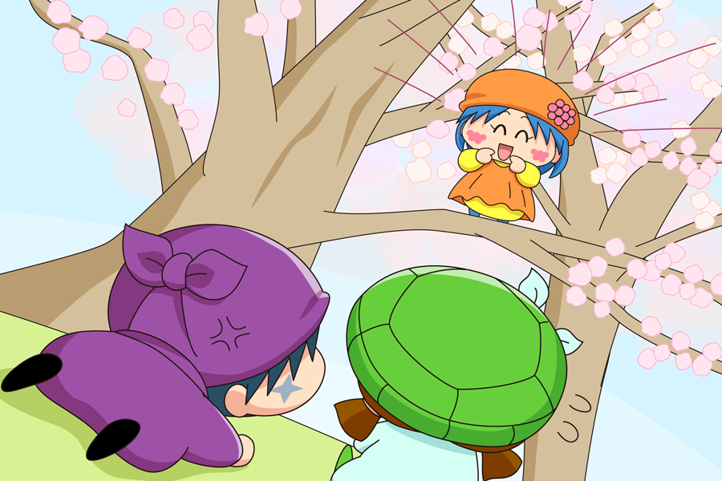

突然の大声に驚いた二人は、バランスを崩し、その場にしりもちをついてしまいました。
そして声のする梅の木を見上げてみると・・・。
リーネ「だめよ、梅の枝を折っちゃ！」
サスケ「いてて・・・。誰だぜこいつ？」
リーネ「聞いて驚かないでね。
私は梅の木たちを守る、梅の妖精・リーネちゃんで～す」
カメリ「う～ん、そうなの～・・？」
サスケ「見た目からして怪しいぜ」
リーネ「あ、今私のことを疑ったわね！
まぁあんたみたいなどんくさそうな妖精には私の魅力はわからないわ」
サスケ「カメリを馬鹿にするなだぜ！」
リーネ「あら？そういうあんたもモテなさそうな顔してるわよ」
サスケ「なんだと！！」
カメリ「ケンカは～だめ～だよ～二人とも～」
カメリはあわてながら、睨みあう二人を止めました。
リーネ「だけどあんたたち、なんで梅の枝を折ろうとしたわけ？」
カメリ「私たち、ミオリさんに梅の花を見せたくて」
リーネ「ミオリってあそこの家の女の子？」
サスケ「そうだぜ！」
リーネ「私、あの女の子嫌い。
だって全然梅の木を世話してくれないんだもん」
サスケ「だってミオリさんは」
リーネ「この梅の木たちは自分たちの力でがんばって花を咲かせてるんだから。
たとえどんな理由があっても折っちゃだめ！絶対！」
サスケ「・・・ちぇっ、ケチ！
もう行こうぜ、カメリ！」
カメリ「ま、まってよ～。サスケくん～」
ふてくされたサスケと追いかけるカメリ。
その二人を呼び止めるのように、リーネは言いました。
リーネ「じゃあ私と勝負して、私に勝ったら何とかしてあげる！」
わわ、ものすごく間が空いてしまいごめんなさいm(_ _)m。せっかく途中まで書いたお話なので、なんとしてでも最後まで書きたいと思います（たいしたストーリーではないけれど・・・）。
ひとつ前のお話で、どこからか聞こえてきた声の主は、私のオリフェ・リーネでした。とにかくずるがしこい妖精なので、この後サスカメにどんな迷惑がふりかかるのか、どうぞお楽しみに・・！？
(2015/5/1)